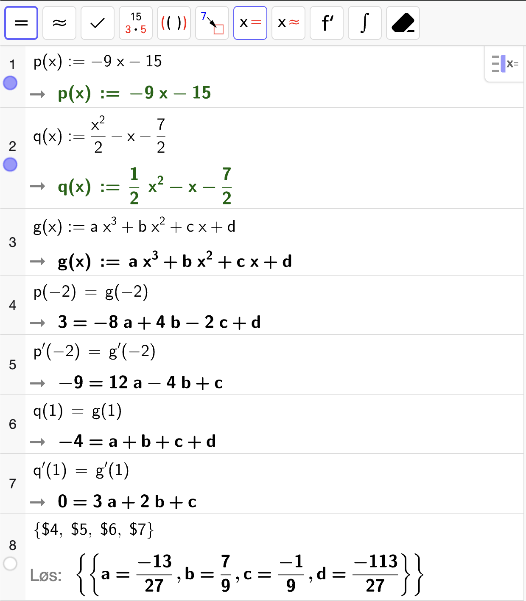

Eksamen vår 2025#
Eksamen våren 2025 var todelt med 2 timer på del 1 og 3 timer på del 2. Våren 2026 vil eksamen være todelt med 3 timer på del 1 og 2 timer på del 2.
Del 1 (Uten hjelpemidler – 2 timer)#
Oppgave 1 (2 poeng)
Deriver funksjon \(f\) gitt ved
Fasit
Løsning
Oppgave 2 (5 poeng)
Funksjonen \(g\) er gitt ved
Bestem eventuelle nullpunkter til funksjonen \(g\).
Fasit
Løsning
Vi løser likningen \(g(x) = 0\):
som gir
Vis at
Løsning
Vi bruker produktregelen for derivasjon:
Finn koordinatene til eventuelle topp- og bunnpunkter på grafen til \(g\).
Løsning
Vi løser først likningen \(g'(x) = 0\):
som gir
Den første løsningen er et nullpunkt, så koordinatene til det ene stasjonære punktet er bare \(\left(\dfrac{1}{2}, 0\right)\). Så setter vi inn disse \(x\)-verdien til det andre stasjonære punktet i funksjonen \(g\) for å finne de tilhørende \(y\)-verdiene:
Vi tegner en fortegnslinje for \(g'(x)\) for å avgjøre om det stasjonære punktet \(\left(-\dfrac{3}{2}, \dfrac{8}{e^{3/2}}\right)\) er et topp- eller bunnpunkt:
Grafen til \(g\) stiger før og synker etter \(x = -\dfrac{3}{2}\) så dette svarer til et toppunkt. Grafen til \(g\) synker før og stiger etter \(x = \dfrac{1}{2}\) så dette svarer til et bunnpunkt. Dermed er koordinatene til toppunktet \(\left(-\dfrac{3}{2}, \dfrac{8}{e^{3/2}}\right)\) og koordinatene til bunnpunktet \(\left(\dfrac{1}{2}, 0\right)\).
Oppgave 3 (4 poeng)
Løs likningene
Fasit
Løsning
Fasit
Løsning
For forenkler venstresiden med logaritmereglene:
Altså har vi at
Oppgave 4 (4 poeng)
Bestem grenseverdiene
Fasit
Løsning
Vi prøver å sette inn \(x = 3\) direkte i uttrykket for å finne grenseverdien:
Fasit
Løsning
Vi får et \(0/0\)-uttrykk når vi setter inn \(x = 4\), så vi bruker L’Hôpitals regel for å finne grenseverdien:
Oppgave 5 (2 poeng)
Funksjonen \(f\) er gitt ved
Avgjør om \(f\) er kontinuerlig i \(x = 0\).
Fasit
\(f\) er kontinuerlig i \(x = 0\).
Løsning
La \(g(x) = x^2 + 2\) og \(h(x) = 2e^x\). For at \(f\) skal være kontinuerlig i \(x = 0\), må
Vi finner først \(g(0)\):
Så finner vi \(h(0)\):
Siden \(g(0) = h(0)\), så er \(f\) kontinuerlig i \(x = 0\).
Avgjør om \(f\) er deriverbar i \(x = 0\).
Fasit
\(f\) er ikke deriverbar i \(x = 0\).
Løsning
Vi lar \(g(x) = x^2 + 2\) og \(h(x) = 2e^x\). For at \(f\) skal være deriverbar i \(x = 0\), må
Vi finner først \(g'(0)\):
Så finner vi \(h'(0)\):
Siden \(h'(0) \neq g'(0)\), så er ikke \(f\) deriverbar i \(x = 0\).
Oppgave 6 (6 poeng)
Jelena, Nils og Ahmad spiller basketball. Tenk deg at vi legger et koordinatsytem over banen.
Ved et tidspunkt befinner Jelena seg i punktet \(J(0, 0)\), Nils befinner seg i punktet \(N(-1, 2)\) og Ahmad befinner seg i punktet \(A(1, 1)\).
Enheten langs aksene er meter.
Hvor langt er det mellom Nils og Ahmad?
Fasit
Løsning
Vektoren som peker fra Nils til Ahmad er
Avstanden mellom Nils og Ahmad er da
En basketball ligger i punktet \((-1, a)\) der \(a \in \real\). Vektoren som går fra Jelena til ballen, er parallell med vektoren som går fra Nils til Ahmad.
Bestem \(a\).
Fasit
Løsning
Vektoren fra Nils til Ahmad fant vi i forrige oppgave og var gitt ved
La vektoren fra Jelena til ballen være \(\lvec{JB}\). Da har vi at
Samtidig skal \(\lvec{JB} \parallel \lvec{NA}\), så det må finnes en skalar \(k\) slik at
Vektorlikningen krever at begge likninger er oppfylt samtidig slik at:
Den første likningen gir
Det betyr at
Nils flytter seg til et punkt \(M\). \(M\) er det nærmeste punktet som er plassert slik at avstanden mellom Jelena og Nils er \(\sqrt{10}\) meter. Vinkelen mellom Nils, Ahmad og Jelena, \(\angle MAJ\), er \(90\) grader.
Bestem koordinatene til \(M\).
Fasit
Løsning
Vi lager oss en hjelpefigur av situasjonen:
Vi skal finne det punktet \(M\) som oppfyller at
\(\abs{\lvec{JM}} = \sqrt{10}\)
\(\angle MAJ = 90^\circ\)
\(M\) ligger nærmest mulig \(N\).
Vi kan merke oss at vi kan skrive \(\lvec{JM}\) som
Siden \(\angle MAJ = 90\degree\), så vil
der \(\lvec{JA}_\perp\) er en tverrvektor til \(\lvec{JA}\) og \(k\) er en skalar. Vi starter med å finne \(\lvec{JA}\):
Vi vet også hvilken lengde \(\lvec{JM}\) skal ha. Fra dette kan vi finne lengden til \(\lvec{AM}\):
der vi har brukt at \(\abs{\lvec{JA}}^2 = \abs{\lvec{JA}_\perp}^2 = 2\). Da følger det at
Med andre ord får vi to mulige løsninger for \(M\):
eller
Det punktet som ligger nærmest \(N\) er \(M(-1, 3)\), så derfor er dette det punktet Nils flytter seg til.
Del 2 (Med hjelpemidler – 3 timer)#
Oppgave 1 (6 poeng)
Teknologiselskaper PowBat skal lansere en ny batteriteknologi i en by med 3 millioner husstander. PowBat regner med at antallet husstander som har batteriet \(t\) uker etter lanseringen, vil følge modellen \(S\) gitt ved
Hvor lang tid vil det ta før halvparten av husstandene i byen har batteriet, ifølge modellen?
Fasit
Ca. 103 uker.
Løsning
Det er \(3~000~000\) husstander til sammen, så for å avgjøre hvor lang tid det før halvparten har batteriet, løser vi \(S(t) = 1~500~00\) med CAS:

Vi ser at etter ca \(103\) uker vil halvparten av husstandene i byen ha batteriet.
Bestem \(S'(52)\). Gi en praktisk tolkning av svaret.
Løsning
\(S'(52)\) vil gi oss omtrent hvor mange nye husstander som får batteriet iløpet av uke 52. Vi kan finne \(S'(52)\) ved å bruke CAS:

Altså er det ca. 4873 nye husstander som får batteriet i uke 52, ifølge modellen.
Denne oppgaven er ikke relevant for halvdagsprøven. Skip it.
Det viser at konkurrenten BA3 planlegger å lansere et batteri med tilsvarende teknologi samtidig. Dette vil påvirke salget til PowBat.
Etter å ha hørt planene til BA3 antar PowBat at
de totalt vil få solgt batteriet til 1,5 millioner husstander
500 husstander har batteriet når det lanseres
flest nye husstander kjøper batteriet i uke 60
Bruk antakelsene ovenfor til å finne en ny logistisk modell \(F\) for antallet husstander som har batteriet etter \(t\) uker.
Fasit
Løsning
Vi starter med å sette opp en logistisk modell på formen
Vi vet at det maksimalt blir vil være \(1~500~000\) husstander, så dette blir bareevnen \(a\) i modellen. Altså har vi at
Videre vet vi at \(F(0) = 500\) siden det er \(500\) husstander som har batteriet når det lanseres. Da får vi at
I tillegg skal flest husstander kjøpe batteriet i uke \(60\), som tilsvarer at
Da får vi at
Altså er den nye modellen for antallet husstander som har batteriet etter \(t\) uker gitt ved
Oppgave 2 (6 poeng)
Funksjonen \(f\) er gitt ved
og har definisjonsmengden \(I = [a, b]\) der \(a, b \in \real\).
Bestem det største intervallet \(I\), slik at \(f\) har en omvendt funksjon \(g\) når \(2 \in I\).
Fasit
Løsning
For at \(f\) skal ha en omvendt funksjon på intervallet \(I\), kan ikke funksjonen ha et ekstremalpunkt på innsiden av intervallet. Vi leter ett eventuelle ekstremalpunkter først:
som betyr at
Vi tegner et fortegnsskjema for \(f'(x)\) for å avgjøre om punktene faktisk er ekstremalpunkter:
Vi ser at begge punkter er ekstremalpunkter siden \(f'(x)\) skifter fortegn rundt punktene. Setter vi \(I = [0, 4]\) så vil ingen ekstremalpunkter ligge på innsiden av intervallet, og vi sikrer at \(2 \in I\). Dermed er det største intervallet \(I\) slik at \(f\) har en omvendt funksjon \(g\) når \(2 \in I\), gitt ved
Bestem stigningstallet til tangenten til grafen til \(g\) i punktet \((-10, 3)\).
Fasit
Stigningstallet til tangenten er \(-\dfrac{1}{3}\)
Løsning
Punktet \((-10, 3)\) ligger på grafen til \(g\) som betyr at punktet \((3, -10)\) ligger på grafen til \(f\). Stigningstallet til tangenten til grafen til \(f\) vil da være \(f'(3)\), og stigningstallet til tangenten til grafen til \(g\) er
Vi har at
Altså er
Altså er stigningstallet til tangenten til grafen til \(g\) i punktet \((-10, 3)\) gitt ved \(-\dfrac{1}{3}\).
Grafen til \(g\) har en annen tangent med samme stigningstallet som tangenten i punktet \((-10, 3)\).
Bestem koordinatene til tangeringspunktet.
Fasit
Løsning
Vi løser \(f'(x) = -3\) for å finne det andre tangeringspunktet \((a, b)\) på grafen til \(f\). Da vil koordinatene til tangeringspunktet på grafen til \(g\) være \((b, a)\).
Altså vil det andre tangeringspunktet på grafen til \(f\) være \((1, f(1))\). Vi finner \(f(1)\):
Dermed er koordinatene til det andre tangeringspunktet på grafen til \(g\) gitt
Oppgave 3 (3 poeng)
Amalie arbeider med en funksjon \(f\) med delt forskrift og skal vise funksjonsuttrykket til de andre i klassen. Dessverre har hun søkt på arket sitt og klarer ikke å lese alt som står der.
Hun husker at \(f\) er kontinuerlig og deriverbar for alle \(x \in \real\). Hun husker også at det midterste uttrykket er et tredjegradspolynom.
Bruk dette til å bestemme hele funksjonsuttrykket til \(f\).
Fasit
Det midterste uttrykket må være
Løsning
Funksjonen \(f\) er bygget opp av polynomer i hver forskrift, og disse er kontinuerlige overalt.
Vi lar
For at \(f\) skal være kontinuerlig og deriverbar i \(x = -2\), så må
For at \(f\) skal være kontinuerlig og deriverbar i \(x = 1\), så må
Dette gir oss fire likninger og fire ukjente siden \(g(x)\) er et tredjegradspolynom. Vi løser likningene med CAS:
{kind=link}

Vi ser altså at \(f\) er kontinuerlig og deriverbar overalt dersom vi setter det midterste uttrykket lik
Oppgave 4 (8 poeng)
Posisjonen \(\vec{r}\) til en fiskebåt \(t\) timer etter at den drar fra land, er gitt ved
Enheten langs aksene er kilometer.
Farten til en båt måles vanligvis i knop, der \(1\) knop er \(1852\) meter per time.
Bestem farten til fiskebåten i knop.
Fasit
Løsning
Farten til båten er gitt ved
Denne farten er i kilometer per time. For å konvertere til knop, kan vi gjøre følgende utregning:
Dermed har vi at
Vi kan finne en tilnærmet verdi for dette med CAS:

Altså er farten til båten ca. \(5.1\) knop.
Et fyr står i posisjonen \((4, 7)\).
Bestem den minste avstanden mellom fiskebåten og fyret.
Fasit
Løsning
Båten beveger seg langs en rett linje. En retningsvektor for linja vil være fartsvektoren
Den minste avstanden fra fyret til båten vil være den korteste avstanden fra punktet \(P(4, 7)\) til linja. Vi trenger også et punkt på linja. Vi lar dette punktet være
Da vil den korteste avstanden \(h\) være
Vi har at
og at en tverrvektor til \(\vec{v}\) er
Da får vi at
Dermed blir den korteste avstanden
En fiskestim er i punktet \((1, -3)\) ved tiden \(t = 0\), og stimen svømmer med hastigheten \(\vec{v} = [4, 11]\).
Vil fiskebåten treffe fiskestimen?
Fasit
Fiskebåten treffer ikke fiskestimen fordi de er i skjæringspunktet mellom kurvene sine på forskjellige tidspunkter.
Løsning
La \(\vec{r}_f(t)\) være posisjonen til fiskestimen etter \(t\) timer. Posisjonsvektoren vil da være gitt ved
For å undersøke om de treffer hverandre, løser vi likningen
Dette gjør vi med CAS:

Vi får forskjellig verdi for \(s\) og \(t\) som betyr at de er der på forskjellige tidspunkter. Fiskestimen er der akkurat litt senere enn fiskebåten. Dermed vil ikke fiskebåten treffe fiskestimen.
En annen fiskebåt er i punktet \((-2, 0)\) ved tiden \(t = 0\) og holder konstant fart i retning langs \(\vec{u} = [6, 4]\).
Bestem farten denne fiskebåten må holde for å treffe fiskestimen.
Fasit
Løsning
La først \(\vec{r}_2(t)\) være posisjonen dersom fiskebåten starter i \((-2, 0)\) og kjører med fartsvektoren \(\vec{v} = [6, 4]\). Da kan vi finne koordinatene til punktet der kurven til fiskestimen og kurven til denne fiskebåten skjærer hverandre ved å løse likningen
Vi gjør dette med CAS:

Altså vil fiskestimen være i skjæringspunktet \(\left(\dfrac{17}{5}, \dfrac{18}{5}\right)\) etter \(t = \dfrac{3}{5}\) timer. Fiskemåten må være der samtidig. La \(\vec{v} = [a, b]\) være fartsvektoren til fiskebåten. Da må vi kreve at
Vi løser likningen med CAS:

Altså må fartsvektoren være \(\vec{v} = [9, 6] = 3[3, 2]\) som gir farten
Altså må fiskebåten holde en fart på \(3\sqrt{13}~\mathrm{km/h}\) for å treffe fiskestimen.
Oppgave 5 (4 poeng)
Grafen til en funksjonen \(f\) gitt ved \(f(x) = \ln x\) er vist i figuren nedenfor.
Et punkt \(B\) på grafen til \(f\) er plassert slik at tangenten til grafen i punktet \(B\) går gjennom \(A(0, 0)\).
Punktet \(C\) er plassert på linja \(y = x\) slik at \(\angle ACB = 90\degree\).
Bestem eksakte verdier for koordinatene til punktet \(B\).
Fasit
Løsning
Punktet \(B\) ligger på en linje som er en tangent til grafen i et punkt \((x, f(x))\). Gitt punktet \(x\), så vil stigningstallet til tangenten være gitt ved den deriverte av \(f\) i punktet \(x\):
Siden punktet \(A(0, 0)\) også ligger på tangenten og er i origo, vil \(\lvec{AB}\) beskrive posisjonsvektoren til punktet \(B\). Dette punktet vil ha koordinatene \((x, f(x)) = (x, \ln x)\). Dermed er
Når vi øker \(x\) med én enhet, vil \(y\)-verdien øke med stigningstallet til tangenten, altså \(\frac{1}{x}\). Dermed kan vi uttrykke retningsvektoren til tangenten som
Punktene på tangenten kan derfor beskrives som
Vi må bestemme \(t\) og \(x\) slik at \(\vec{r}(t) = \lvec{AB}\). Altså må vi løse likningen
Dette gir oss to likninger:
Den første likningen forteller oss bare at \(t = x\), så vi kan sette dette inn i den andre likningen som gir:
Altså må \(x = e\). Dermed er koordinatene til punktet \(B\) gitt ved
Bestem det eksakte arealet av \(\triangle ABC\).
Fasit
Løsning
For å bestemme arealet av \(\triangle ABC\), må vi kjenne til to vektorer som spenner ut trekanten. Vi vet allerede at \(\lvec{AB} = [e, 1]\). Vi trenger derfor bare én vektor til for én av sidene i trekanten. Vi kan finne \(\lvec{AC}\) ved å regne ut projeksjonen av \(\lvec{AB}\) ned på linja \(y = x\) som har retningsvektor \(\vec{v} = [1, 1]\). Da får vi
Vi regner ut skalarproduktet i telleren først:
Så regner vi ut nevneren:
Dermed får vi
Arealet av \(\triangle ABC\) er da gitt ved formelen
der \(\lvec{AC}_\perp\) er en tverrvektor til \(\lvec{AC}\). En tverrvektor til \(\lvec{AC}\) får vi vet å bytte plass på koordinatene og endre fortegn på én av dem:
Nå kan vi regne ut skalarproduktet:
Altså er arealet av trekanten gitt ved